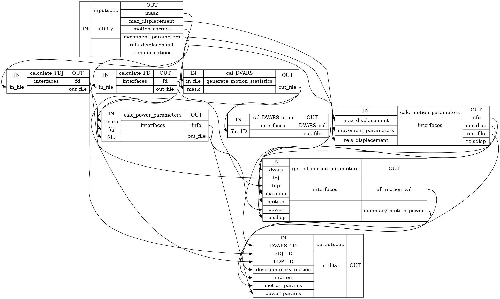

Generate Motion and Power Statistics¶
- class CPAC.generate_motion_statistics.ImageTo1D(**inputs)[source]¶
- Attributes:
always_runShould the interface be always run even if the inputs were not changed? Only applies to interfaces being run within a workflow context.
can_resumeDefines if the interface can reuse partial results after interruption.
cmdsets base command, immutable
cmdlinecommand plus any arguments (args)
num_threadsGet number of threads.
- terminal_output
versioninterfaces should implement a version property
Methods
aggregate_outputs([runtime, needed_outputs])Collate expected outputs and apply output traits validation.
help([returnhelp])Prints class help
alias of
CPAC.generate_motion_statistics.generate_motion_statistics.ImageTo1DInputSpecload_inputs_from_json(json_file[, overwrite])A convenient way to load pre-set inputs from a JSON file.
alias of
CPAC.generate_motion_statistics.generate_motion_statistics.ImageTo1DOutputSpecrun([cwd, ignore_exception])Execute this interface.
save_inputs_to_json(json_file)A convenient way to save current inputs to a JSON file.
set_default_output_type(outputtype)Set the default output type for AFNI classes.
set_default_terminal_output(output_type)Set the default terminal output for CommandLine Interfaces.
raise_exception
version_from_command
- input_spec¶
alias of
CPAC.generate_motion_statistics.generate_motion_statistics.ImageTo1DInputSpec
- output_spec¶
alias of
CPAC.generate_motion_statistics.generate_motion_statistics.ImageTo1DOutputSpec
- CPAC.generate_motion_statistics.calculate_DVARS(func_brain, mask)[source]¶
Method to calculate DVARS as per power’s method
- Parameters:
- func_brainstring (nifti file)
path to motion correct functional data
- maskstring (nifti file)
path to brain only mask for functional data
- Returns:
- out_filestring (numpy mat file)
path to file containing array of DVARS calculation for each voxel
- CPAC.generate_motion_statistics.calculate_FD_J(in_file, motion_correct_tool='3dvolreg')[source]¶
Method to calculate framewise displacement as per Jenkinson et al. 2002
- Parameters:
- in_filestring
matrix transformations from volume alignment file path
- Returns:
- out_filestring
Frame-wise displacement file path
- CPAC.generate_motion_statistics.calculate_FD_P(in_file)[source]¶
Method to calculate Framewise Displacement (FD) as per Power et al., 2012
- Parameters:
- in_filestring
movement parameters vector file path
- Returns:
- out_filestring
Frame-wise displacement mat file path
- CPAC.generate_motion_statistics.gen_motion_parameters(subject_id, scan_id, movement_parameters, max_displacement, motion_correct_tool)[source]¶
Method to calculate all the movement parameters
- Parameters:
- subject_idstring
subject name or id
- scan_idstring
scan name or id
- max_displacementstring
path of file with maximum displacement (in mm) for brain voxels in each volume
- movement_parametersstring
path of 1D file containing six movement/motion parameters(3 Translation, 3 Rotations) in different columns (roll pitch yaw dS dL dP)
- Returns:
- out_filestring
path to csv file containing various motion parameters
- CPAC.generate_motion_statistics.gen_power_parameters(subject_id, scan_id, fdp=None, fdj=None, dvars=None, motion_correct_tool='3dvolreg')[source]¶
Method to generate Power parameters for scrubbing
- Parameters:
- subject_idstring
subject name or id
- scan_idstring
scan name or id
- FDP_1Dstring
framewise displacement(FD as per power et al., 2012) file path
- FDJ_1Dstring
framewise displacement(FD as per jenkinson et al., 2002) file path
- thresholdfloat
scrubbing threshold set in the configuration by default the value is set to 1.0
- DVARSstring
path to numpy file containing DVARS
- Returns:
- out_filestring (csv file)
path to csv file containing all the pow parameters
- CPAC.generate_motion_statistics.motion_power_statistics(name='motion_stats', motion_correct_tool='3dvolreg')[source]¶
- The main purpose of this workflow is to get various statistical measures
from the movement/motion parameters obtained in functional preprocessing.
- Parameters:
- :param str name: Name of the workflow, defaults to ‘motion_stats’
- :return: Nuisance workflow.
- :rtype: nipype.pipeline.engine.Workflow
Notes
Workflow Inputs:
inputspec.subject_id : string Subject name or id inputspec.scan_id : string Functional Scan id or name inputspec.motion_correct : string (func/rest file or a list of func/rest nifti file) Path to motion corrected functional data inputspec.max_displacement : string (Mat file) maximum displacement (in mm) vector for brain voxels in each volume. This file is obtained in functional preprocessing step inputspec.movement_parameters : string (Mat file) 1D file containing six movement/motion parameters(3 Translation, 3 Rotations) in different columns (roll pitch yaw dS dL dP), obtained in functional preprocessing step
Workflow Outputs:
outputspec.FDP_1D : 1D file mean Framewise Displacement (FD) outputspec.power_params : txt file Text file containing various power parameters for scrubbing outputspec.motion_params : txt file Text file containing various movement parameters
Order of commands:
Calculate Framewise Displacement FD as per power et al., 2012
Differentiating head realignment parameters across frames yields a six dimensional timeseries that represents instantaneous head motion. Rotational displacements are converted from degrees to millimeters by calculating displacement on the surface of a sphere of radius 50 mm.[R5]
Calculate Framewise Displacement FD as per jenkinson et al., 2002
Calculate DVARS
DVARS (D temporal derivative of timecourses, VARS referring to RMS variance over voxels) indexes the rate of change of BOLD signal across the entire brain at each frame of data.To calculate DVARS, the volumetric timeseries is differentiated (by backwards differences) and RMS signal change is calculated over the whole brain.DVARS is thus a measure of how much the intensity of a brain image changes in comparison to the previous timepoint (as opposed to the global signal, which is the average value of a brain image at a timepoint).[R5]
Calculate Power parameters:
MeanFD : Mean (across time/frames) of the absolute values for Framewise Displacement (FD), computed as described in Power et al., Neuroimage, 2012) rootMeanSquareFD : Root mean square (RMS; across time/frames) of the absolute values for FD rmsFD : Root mean square (RMS; across time/frames) of the absolute values for FD FDquartile(top 1/4th FD) : Mean of the top 25% highest FD values MeanDVARS : Mean of voxel DVARS
Calculate Motion Parameters
Following motion parameters are calculated:
Subject Scan Mean Relative RMS Displacement Max Relative RMS Displacement Movements > threshold Mean Relative Mean Rotation Mean Relative Maxdisp Max Relative Maxdisp Max Abs Maxdisp Max Relative Roll Max Relative Pitch Max Relative Yaw Max Relative dS-I Max Relative dL-R Max Relative dP-A Mean Relative Roll Mean Relative Pitch Mean Relative Yaw Mean Relative dS-I Mean Relative dL-R Mean Relative dP-A Max Abs Roll Max Abs Pitch Max Abs Yaw Max Abs dS-I Max Abs dL-R Max Abs dP-A Mean Abs Roll Mean Abs Pitch Mean Abs Yaw Mean Abs dS-I Mean Abs dL-R Mean Abs dP-A
High Level Workflow Graph:

Detailed Workflow Graph:
References
[1]Power, J. D., Barnes, K. A., Snyder, A. Z., Schlaggar, B. L., & Petersen, S. E. (2012). Spurious but systematic correlations in functional connectivity MRI networks arise from subject motion. NeuroImage, 59(3), 2142-2154. doi:10.1016/j.neuroimage.2011.10.018
[2]Power, J. D., Barnes, K. A., Snyder, A. Z., Schlaggar, B. L., & Petersen, S. E. (2012). Steps toward optimizing motion artifact removal in functional connectivity MRI; a reply to Carp. NeuroImage. doi:10.1016/j.neuroimage.2012.03.017
[3]Jenkinson, M., Bannister, P., Brady, M., Smith, S., 2002. Improved optimization for the robust and accurate linear registration and motion correction of brain images. Neuroimage 17, 825-841.
Examples
>>> from CPAC import generate_motion_statistics >>> wf = generate_motion_statistics.motion_power_statistics("generate_statistics") >>> wf.inputs.inputspec.movement_parameters = 'CPAC_outupts/sub01/func/movement_parameteres/rest_mc.1D' >>> wf.inputs.inputspec.max_displacement = 'CPAC_outputs/sub01/func/max_dispalcement/max_disp.1D' >>> wf.inputs.inputspec.motion_correct = 'CPAC_outputs/sub01/func/motion_correct/rest_mc.nii.gz' >>> wf.inputs.inputspec.mask = 'CPAC_outputs/sub01/func/func_mask/rest_mask.nii.gz' >>> wf.inputs.inputspec.transformations = 'CPAC_outputs/sub01/func/coordinate_transformation/rest_mc.aff12.1D' >>> wf.inputs.inputspec.subject_id = 'sub01' >>> wf.inputs.inputspec.scan_id = 'rest_1' >>> wf.base_dir = './working_dir' >>> wf.run()
{kind=link}